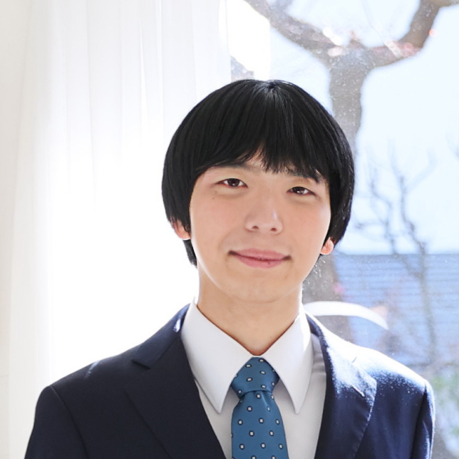

2000年神奈川県生まれ。
現在は東京大学工学部で、情報技術やデータサイエンスに関する学習と研究を行っています。
修士課程に進学後、2025年度からソフトウェアエンジニアとして本格的な勤務を開始する予定です。
中学生時代より継続してソフトウェアの個人制作に取り組み、プログラミング経験は総合して9年ほどとなります。
長期インターンシップにて、プログラマとして業務効率化のための開発に2年間携わったほか、個人開発としていくつかのWebアプリやBotも制作しています。